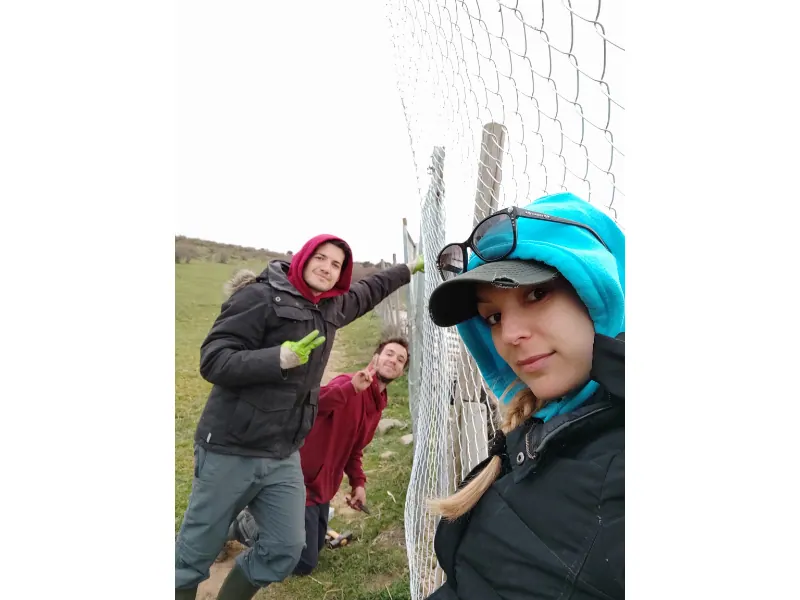

Transferencia habitual
CaixaBank
ES89 2100 1277 8113 0027 3677Indica tu nombre y “Donativo Santuario” en el concepto.

Donativos
Alimentación, alquileres, tratamientos veterinarios y emergencias dependen de la suma de muchas personas comprometidas.
Elige la vía más cómoda
Los datos siguientes proceden de la web oficial actual del Santuario.
Transferencia habitual
ES89 2100 1277 8113 0027 3677Indica tu nombre y “Donativo Santuario” en el concepto.
Bizum
Una aportación rápida desde tu móvil para los cuidados diarios.
Donación online
Realiza una aportación puntual desde la página oficial de donaciones.
Abrir PayPalCampaña extraordinaria
La campaña para adquirir una finca propia tiene un objetivo de 600.000 €. También admite transferencia específica en Banco Sabadell.
Confianza
Centralizamos en un único espacio la documentación pública disponible, las campañas y la explicación general de las necesidades que sostienen las ayudas.